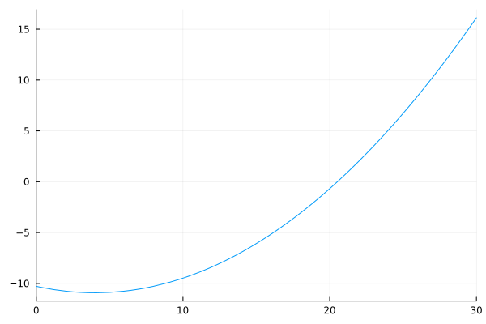
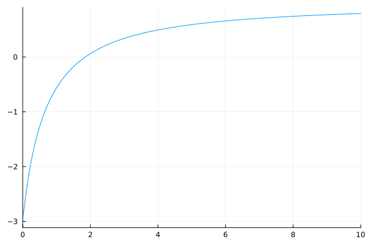
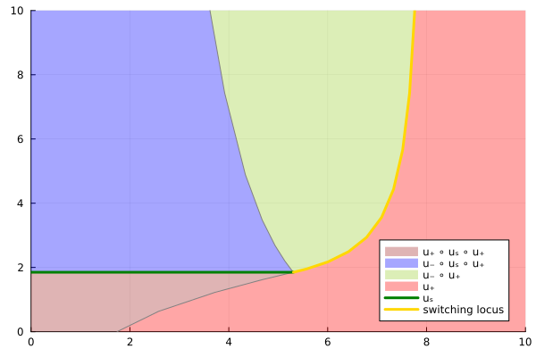
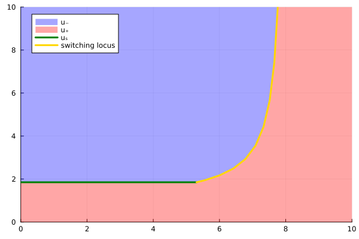

Model creation
In this tutorial, we explain how to create a Model from Filtration.jl package.
Basic usage
Let us start by defining the input functions of the problem. There exists two methods. The first one is to use one of the proposed model given in the package
using Filtration
model = Model(:Benyahia)However, if you want to propose your own model, you can defined your own functions and provide it to the Model.
The provided function given by Filtration.jl package can work whatever the inputs functions are. However, we need to be sure that there exists solutions for this kind of problems and that there exist exacly one root on the domain of interest of a function given by the check_root function.
using Filtration
ap = 0; bp = 1; cp = 0.16; dp = 3; Qp = 1
ar = 0.5; cr = 0.64; dr = 12; Qr = 2
p = [ap, bp, cp, dp, Qp, ar, cr, dr, Qr]
f₁(m,p) = p[2]
f₂(m,p) = -p[6]*m
g₁(m,p) = p[5]
g₂(m,p) = -p[9]
e₁(m,p) = p[3]*m + p[4]
e₂(m,p) = p[7]*m + p[8]Before creating a model, it is recommended to use the check_root function to ensure that the plotted function have only one root.
The symbol :min correspond to the objective. It can be also :min or :max. This symbol is also used for the creation of the model.
check_root(e₁, e₂, f₁, f₂, g₁, g₂, p, :min; xlim = (0, 30))
A model of can be created with the following code
model = Model(e₁, e₂, f₁, f₂, g₁, g₂, p, :min)If needed, an initial guess of the zero of the function plot by the check_root function can be provided to the Model
model = Model(e₁, e₂, f₁, f₂, g₁, g₂, p, :min, initial_guess = 20.)The function check_root and Model need the functions of the model in inputs. The order of these functions is importants. We need to provide first the two function associated to the cost, and after the function(s) associated to the state(s). The (first) state corresponds to the state that is used on the dynamic of all functions. For the order of the couple of functions, we need to provide first functions associated to filteation mode, when $u = +1$ and after function associated to backwash model, when $u = -1$.
If only 4 functions are provided, the functions are set to $g_1(\cdot) = g_2(\cdot) = 1$ to ensure that $x_2(t) = t$. The following code highlight this case
a = 1; b = 1; e = 1;
p = [a, b, e]
f₁(m,p) = p[2] / (p[3] + m)
f₂(m,p) = -p[1] * m
g(m,p) = 1 / (p[3] + m)
g₁(m,p) = g(m,p)
g₂(m,p) = -g(m,p)
plt = check_root(g₁, g₂, f₁, f₂, p, :max)
model = Model(g₁, g₂, f₁, f₂, p, :max, initial_guess = 2.)
plt
Optimal strategies and optimal synthesis maps
Defining the limits xlim and ylim of the plot, the optimal control stategies plot can be shown from a model by the following code.
The maximum limit of the x-axis, i.e. xlim[2] corresponds to the terminal condition of the second state.
xlim = (0,10); ylim = (0,10)
synthesis = Synthesis(model, xlim, ylim)
plt = plot(synthesis)
However, the classical optimal synthesis can be plotted by setting feedback_form = true.
plt = plot(synthesis, feedback_form = true)